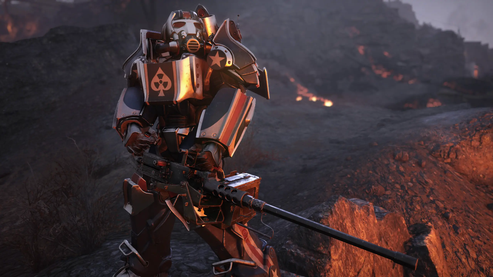

SOBRE MIM
Atualmente tenho 20 anos e jogo a franquia Fallout desde 2016 e Fallout 76 em
2018. Nasci na cidade de São Paulo e moro nela até hoje, o por que eu criar esse
site inspirado no jogo foi para ajudar os Veteranos de outros jogos para conseguirem
adaptar nele.
OBJETIVO
Auxiliar os jogadores da comunidade de Fallout em dúvidas sobre o jogo,
história, mecânica, vantagens, items, armas legacy, sistema de mercado,
tipos de armaduras potentes e farms. De acordo com as informações
acima, poderá aumentar o número de jogadores no intuito de conhecer o jogo
e também ajudar veteranos da série a se adaptar e progredir.
JUSTIFICATIVA
Auxiliar os jogadores da comunidade de Fallout em dúvidas sobre o jogo,
história, mecânica, vantagens, items, armas legacy, sistema de mercado,
tipos de armaduras potentes e farms. De acordo com as informações
acima, poderá aumentar o número de jogadores no intuito de conhecer o jogo
e também ajudar veteranos da série a se adaptar e progredir.
